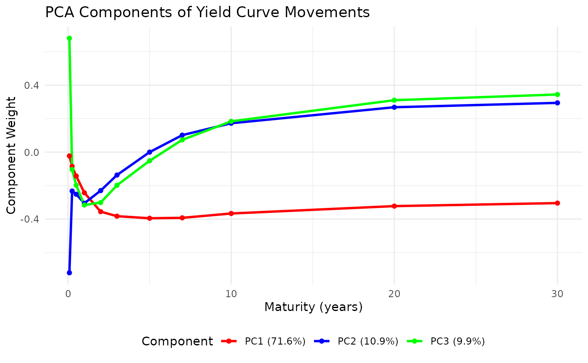

Plot Principal Component Analysis of Yield Curve Movements
Source:R/dns-visualization.r
plot_yield_pca.RdPerforms Principal Component Analysis (PCA) on yield curve movements and visualizes the results.
Usage
plot_yield_pca(
yield_data,
n_components = 3,
plot_weights = TRUE,
plot_scores = TRUE,
plot_variance = TRUE,
scale = TRUE
)Arguments
- yield_data
Data frame. Historical yield curve data with 'Date' column.
- n_components
Integer. Number of principal components to extract.
- plot_weights
Logical. If TRUE, plot the loadings (eigenvectors).
- plot_scores
Logical. If TRUE, plot the scores (projections).
- plot_variance
Logical. If TRUE, plot the explained variance.
- scale
Logical. Whether to standardise each maturity's change series before the decomposition.
TRUEis the default, preserving earlier behaviour.FALSEdecomposes the covariance matrix instead, which is the usual convention for yield curves: it lets the more volatile maturities carry more weight, and is what gives the familiar level, slope and curvature shapes.
Examples
data(treasury_yields)
# scale = FALSE decomposes the covariance matrix, the usual convention for
# yield curves, which is what produces the level/slope/curvature shapes
pca_result <- plot_yield_pca(treasury_yields, scale = FALSE)
round(pca_result$var_explained[1:3], 4)
#> [1] 0.7160 0.1087 0.0991
pca_result$plots$weights
